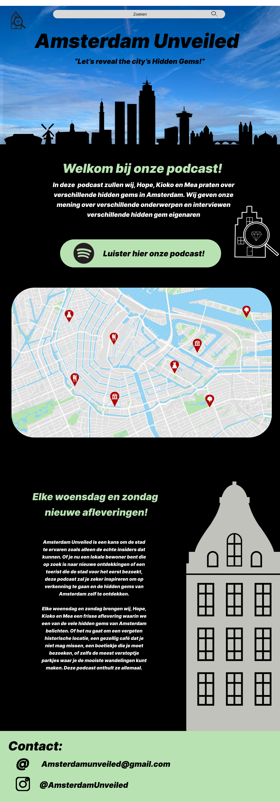

Podcast Amsterdam Unveiled
In de podcast Amsterdam Unveiled geven wij, Hope, Kioko en Mea de luisteraars onze eerlijke mening over verschillende hidden gems in Amsterdam. We delen onze ervaringen over de bereikbaarheid, het eten, de sfeer en de studeer mogelijkheden. Aan het eind van de aflevering krijgen de luisteraars te horen of het echt een hidden gem is en of deze het waard is om te bezoeken. Het is een uitgebreide en eerlijke aflevering die stadsverkenners en mensen die op zoek zijn naar nieuwe plekken om te studeren of werken, zal aanspreken.
Podcast beluisteren
Homepagina
